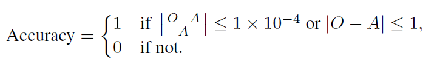

Starter kit
We will provide the repositories for the baseline code for training and evaluating the models on both tasks when the competition kicks off. Stay tuned! Mailing List
Dataset
The training and development splits of the dataset will be released when the competition kicks-off. Stay tuned or Sign-up for updates
A new dataset comprising 1,059 optimization problem instances from various domains (e.g., supply chain management, transportation and logistics, scheduling and planning, energy systems optimization, telecommunications network design, and financial portfolio optimization) has been created for this competition to ensure a balance of real-world applications. The dataset includes 360 Linear Programming (LP) problems with a train/validation/test split of 240/80/80. Additionally, it contains 800 Mixed Integer Linear Programming (MILP) problems, with a train/validation/test split of 480/160/160.
The training and evaluation sets will be shared with participants for model fine-tuning and development, while the test set is reserved for the final evaluation and benchmarking. After the competition, the dataset will be released under the MIT License to benefit the research community.
The tasks
-
Task 1: Linear Programming Modeling
Objective:
The aim of this task is to evaluate the proficiency of LLMs in converting real-world scenarios into LP problems. Participants are expected to demonstrate their understanding of optimization by creating mathematical models that are solvable using optimization solvers.
Task description:
This task is reflective of practical challenges encountered across multiple sectors, including resource allocation, production planning, and logistics, where LP serves as a cornerstone of operations research. The accuracy in modeling linear problems showcases the LLM’s understanding of optimization principles and its capacity to support decision-making. With the growing reliance of businesses and organizations on data-driven decisions, the ability to convert complex, real-world constraints into mathematical models is indispensable.
Expected Outcome:
The expected outcome is an LLM capable of precisely converting real-world scenarios into LP problems. The models produced must be both accurate and solvable using optimization solvers, showcasing the LLM’s capacity to aid in decision-making across different fields.
-
Task 2: Mixed Integer Programming Modeling
Objective:
The aim of this task is to challenge participants to extend their modeling skills to more complex scenarios by formulating mixed-integer programming (MIP) problems. The task requires the integration of both continuous and integer variables, reflecting a higher level of complexity in real-world problems.
Task description:
This task mirrors real-world challenges in various applications, including scheduling, facility location, and product configuration, where some or all of the decision variables are required to be integers. The necessity of this task arises from the increasing complexity of decisionmaking problems that require not only continuous but also discrete solutions.
Expected Outcome:
The expected outcome is an LLM that can effectively model scenarios that require both continuous and integer variables. This would demonstrate the LLM’s adaptability and robustness in handling a broader range of optimization problems.
Metric
we opt for the straightforward metric of the optimal value as a pragmatic solution to assess the quality of the solutions generated. Lets defiune O as the graoud thruth optimial solution and A as the solution of the generated model.
